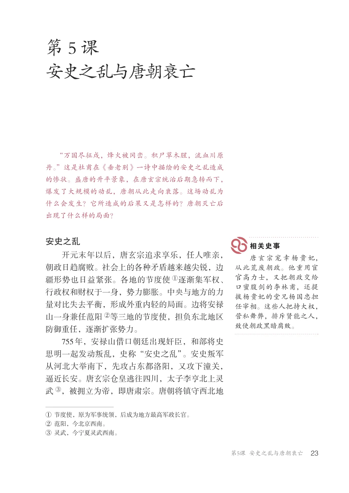
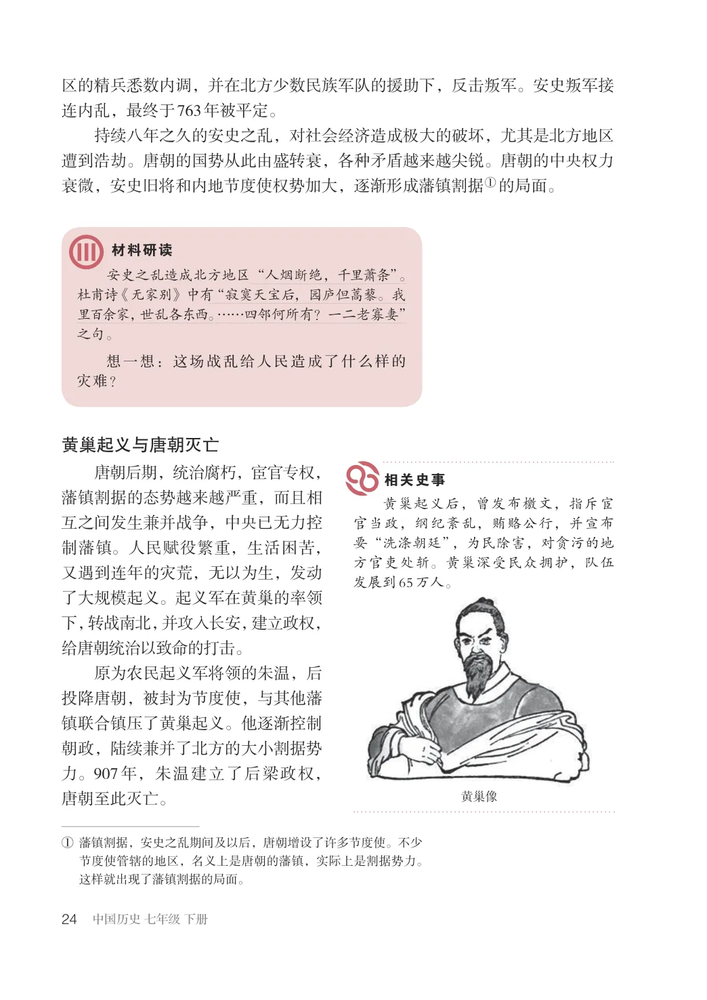
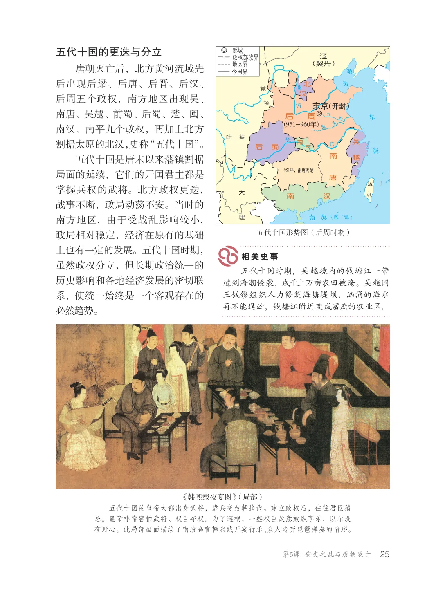
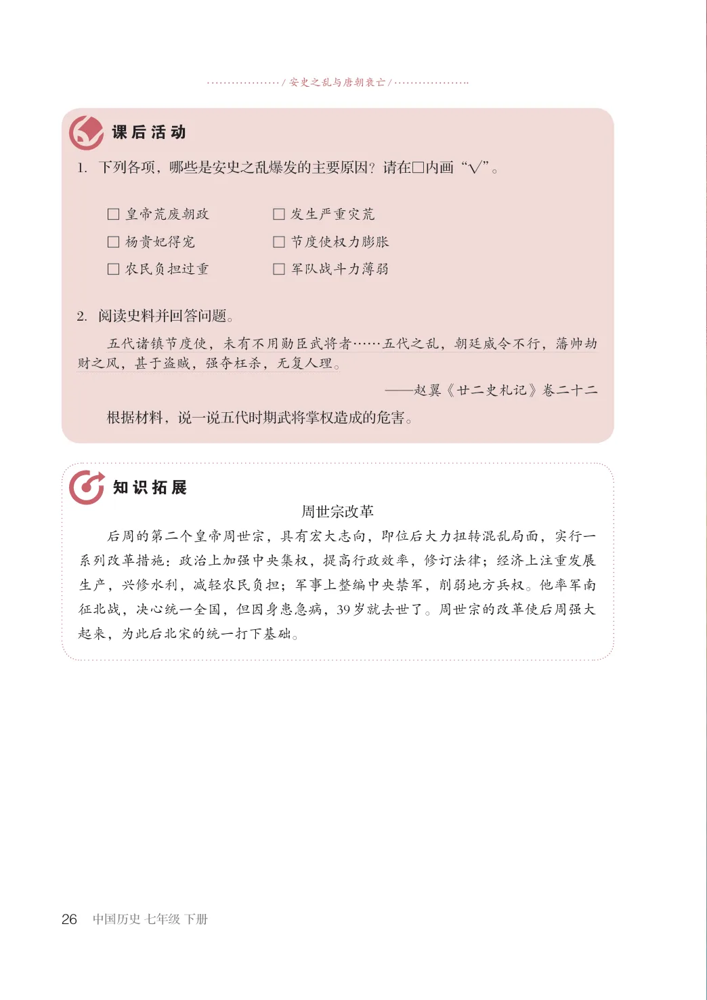

第1单元 · 教材第 23–26 页
第5课 安史之乱与唐朝衰亡
文字版依据教材 PDF 文本层整理；复杂地图、图表及版面关系请以右侧教材原页为准。
“万国尽征戍，烽火被冈峦。积尸草木腥，流血川原丹。”这是杜甫在《垂老别》一诗中描绘的安史之乱造成的惨状。盛唐的升平景象，在唐玄宗统治后期急转而下，爆发了大规模的动乱，唐朝从此走向衰落。这场动乱为什么会发生？它所造成的后果又是怎样的？唐朝灭亡后出现了什么样的局面？
安史之乱
开元末年以后，唐玄宗追求享乐，任人唯亲，朝政日趋腐败。社会上的各种矛盾越来越尖锐，边疆形势也日益紧张。各地的节度使①逐渐集军权、行政权和财权于一身，势力膨胀。中央与地方的力量对比失去平衡，形成外重内轻的局面。边将安禄山一身兼任范阳②等三地的节度使，担负东北地区防御重任，逐渐扩张势力。755年，安禄山借口朝廷出现奸臣，和部将史思明一起发动叛乱，史称“安史之乱”。安史叛军从河北大举南下，先攻占东都洛阳，又攻下潼关，逼近长安。唐玄宗仓皇逃往四川，太子李亨北上灵武③，被拥立为帝，即唐肃宗。唐朝将镇守西北地
唐玄宗宠幸杨贵妃，从此荒废朝政。他重用宦官高力士，又把朝政交给口蜜腹剑的李林甫，还提拔杨贵妃的堂兄杨国忠担任宰相。这些人把持大权，营私舞弊，排斥贤能之人，致使朝政黑暗腐败。
①节度使，原为军事统领，后成为地方最高军政长官。②范阳，今北京西南。③灵武，今宁夏灵武西南。

区的精兵悉数内调，并在北方少数民族军队的援助下，反击叛军。安史叛军接连内乱，最终于763年被平定。
持续八年之久的安史之乱，对社会经济造成极大的破坏，尤其是北方地区遭到浩劫。唐朝的国势从此由盛转衰，各种矛盾越来越尖锐。唐朝的中央权力衰微，安史旧将和内地节度使权势加大，逐渐形成藩镇割据①的局面。
安史之乱造成北方地区“人烟断绝，千里萧条”。杜甫诗《无家别》中有“寂寞天宝后，园庐但蒿藜。我里百余家，世乱各东西。……四邻何所有？一二老寡妻”之句。想一想：这场战乱给人民造成了什么样的灾难？
黄巢起义与唐朝灭亡
唐朝后期，统治腐朽，宦官专权，藩镇割据的态势越来越严重，而且相互之间发生兼并战争，中央已无力控制藩镇。人民赋役繁重，生活困苦，又遇到连年的灾荒，无以为生，发动了大规模起义。起义军在黄巢的率领下，转战南北，并攻入长安，建立政权，给唐朝统治以致命的打击。原为农民起义军将领的朱温，后投降唐朝，被封为节度使，与其他藩镇联合镇压了黄巢起义。他逐渐控制朝政，陆续兼并了北方的大小割据势力。907年，朱温建立了后梁政权，唐朝至此灭亡。
黄巢起义后，曾发布檄文，指斥宦官当政，纲纪紊乱，贿赂公行，并宣布要“洗涤朝廷”，为民除害，对贪污的地方官吏处斩。黄巢深受民众拥护，队伍发展到65万人。
①藩镇割据，安史之乱期间及以后，唐朝增设了许多节度使。不少
节度使管辖的地区，名义上是唐朝的藩镇，实际上是割据势力。这样就出现了藩镇割据的局面。

五代十国的更迭与分立
政权部族界都城
(契丹)
唐朝灭亡后，北方黄河流域先后出现后梁、后唐、后晋、后汉、后周五个政权，南方地区出现吴、南唐、吴越、前蜀、后蜀、楚、闽、南汉、南平九个政权，再加上北方割据太原的北汉，史称“五代十国”。五代十国是唐末以来藩镇割据局面的延续，它们的开国君主都是掌握兵权的武将。北方政权更迭，战事不断，政局动荡不安。当时的南方地区，由于受战乱影响较小，政局相对稳定，经济在原有的基础上也有一定的发展。五代十国时期，虽然政权分立，但长期政治统一的历史影响和各地经济发展的密切联系，使统一始终是一个客观存在的必然趋势。
东京后周
(开封)
(951-960年)
951年，南唐灭楚
涨海 ( )
五代十国形势图（后周时期）
五代十国时期，吴越境内的钱塘江一带遭到海潮侵袭，成千上万亩农田被淹。吴越国王钱镠组织人力修筑海塘堤坝，汹涌的海水再不能逞凶，钱塘江附近变成富庶的农业区。
《韩熙载夜宴图》（局部）五代十国的皇帝大都出身武将，靠兵变改朝换代。建立政权后，往往君臣猜忌。皇帝非常害怕武将、权臣夺权。为了避祸，一些权臣故意放纵享乐，以示没有野心。此局部画面描绘了南唐高官韩熙载开宴行乐、众人聆听琵琶弹奏的情形。

/ 安史之乱与唐朝衰亡/
1．下列各项，哪些是安史之乱爆发的主要原因？请在□内画“√”。
□ 皇帝荒废朝政 □ 发生严重灾荒□ 杨贵妃得宠 □ 节度使权力膨胀□ 农民负担过重 □ 军队战斗力薄弱
2．阅读史料并回答问题。五代诸镇节度使，未有不用勋臣武将者……五代之乱，朝廷威令不行，藩帅劫财之风，甚于盗贼，强夺枉杀，无复人理。
——赵翼《廿二史札记》卷二十二
根据材料，说一说五代时期武将掌权造成的危害。
周世宗改革后周的第二个皇帝周世宗，具有宏大志向，即位后大力扭转混乱局面，实行一系列改革措施：政治上加强中央集权，提高行政效率，修订法律；经济上注重发展生产，兴修水利，减轻农民负担；军事上整编中央禁军，削弱地方兵权。他率军南征北战，决心统一全国，但因身患急病，39岁就去世了。周世宗的改革使后周强大起来，为此后北宋的统一打下基础。
